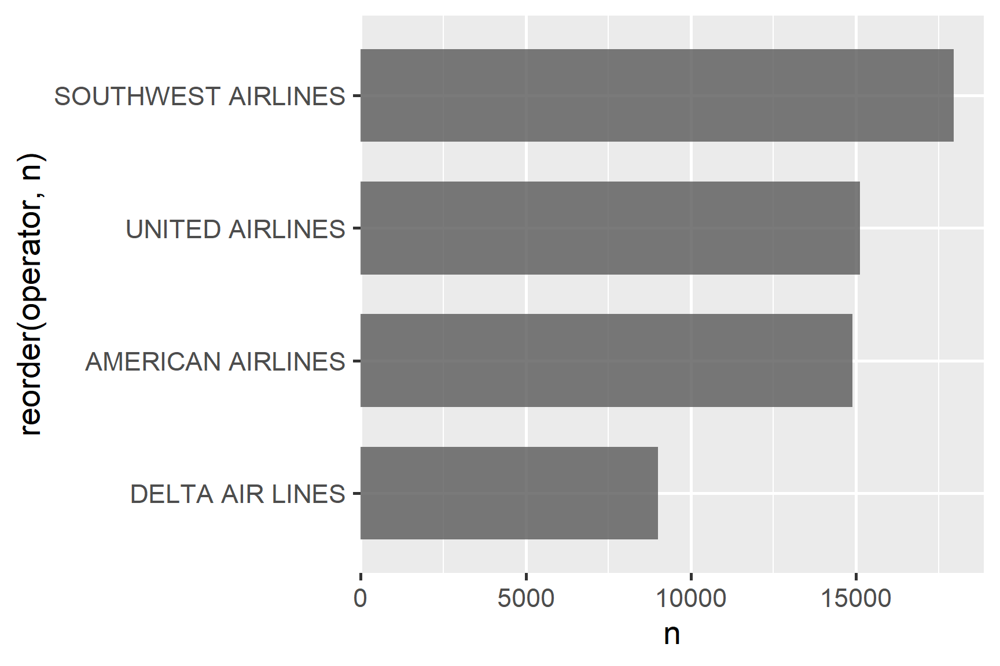

path <- here::here("folder", "file.csv")2 Introduction to ggplot
Learning Objectives
- Learn the functions necessary to import various file types.
- Understand the basic features of ggplot.
- Create plots from data in a dataframe.
- Make basic customizations to ggplot figures.
- Create simple scatterplots and histograms.
2.1 Reading in Data
Use the here package to create file paths
Import data with these functions:
| File type | Function | Package |
|---|---|---|
.csv |
read_csv() |
readr |
.txt |
read.table() |
utils |
.xlsx |
read_excel() |
readxl |
2.1.1 Importing Comma Separated Values (.csv)
Read in .csv files with read_csv(). These usually read in well and the function assumes the first row is the header.
library(tidyverse)
library(here)
csvPath <- here('data', 'milk_production.csv')
milk_production <- read_csv(csvPath)
head(milk_production)#> # A tibble: 6 × 4
#> region state year milk_produced
#> <chr> <chr> <dbl> <dbl>
#> 1 Northeast Maine 1970 619000000
#> 2 Northeast New Hampshire 1970 356000000
#> 3 Northeast Vermont 1970 1970000000
#> 4 Northeast Massachusetts 1970 658000000
#> 5 Northeast Rhode Island 1970 75000000
#> 6 Northeast Connecticut 1970 6610000002.1.2 Importing Text Files (.txt)
Read in .txt files with read.table(). These kinds of files are a little more “raw”, and you may need to specify the skip argument (how many rows to skip before you get to the header row) and header arguments (whether the first row is the header or not). In this example, the data looks like this:
Land-Ocean Temperature Index (C)
--------------------------------
Year No_Smoothing Lowess(5)
----------------------------
1880 -0.15 -0.08
1881 -0.07 -0.12
1882 -0.10 -0.15
1883 -0.16 -0.19So we need to skip the first 5 rows and then set the header to FALSE:
txtPath <- here('data', 'nasa_global_temps.txt')
global_temps <- read.table(txtPath, skip = 5, header = FALSE)
head(global_temps)#> V1 V2 V3
#> 1 1880 -0.15 -0.08
#> 2 1881 -0.07 -0.12
#> 3 1882 -0.10 -0.15
#> 4 1883 -0.16 -0.19
#> 5 1884 -0.27 -0.23
#> 6 1885 -0.32 -0.252.1.3 Importing Excel Files (.xlsx)
Read in .xlsx files with read_excel(). With Excel files it’s a good idea to specify the sheet to read in using the sheet argument:
library(readxl)
xlsxPath <- here('data', 'pv_cell_production.xlsx')
pv_cells <- read_excel(xlsxPath, sheet = 'Cell Prod by Country', skip = 2)
head(pv_cells)#> # A tibble: 6 × 10
#> Year China Taiwan Japan Malaysia Germany `South Korea` `United States`
#> <chr> <chr> <chr> <dbl> <chr> <chr> <chr> <dbl>
#> 1 <NA> Megawatts <NA> NA <NA> <NA> <NA> NA
#> 2 <NA> <NA> <NA> NA <NA> <NA> <NA> NA
#> 3 1995 NA NA 16.4 NA NA NA 34.8
#> 4 1996 NA NA 21.2 NA NA NA 38.8
#> 5 1997 NA NA 35 NA NA NA 51
#> 6 1998 NA NA 49 NA NA NA 53.7
#> # ℹ 2 more variables: Others <chr>, World <dbl>2.2 Basic plots in R
R has a number of built-in tools for basic graph types. Usually we use these for quick plots just to get a sense of the data I’m working with. We almost never use these for final charts that we want to show others (for that we use ggplot2). While there are other built in chart types, we will only show the two we find most useful for quickly exploring data: scatter plots and histograms.
2.2.1 Scatter plots with plot()
A scatter plot helps us see if there is any correlational relationship between two numeric variables. These need to be two “continuous” variables, like time, age, money, etc…things that are not categorical in nature (as opposed to “discrete” variables, like nationality). Here’s a scatterplot of the fuel efficiency (miles per gallon) of cars over their respective horsepower using the mtcars dataset:
plot(x = mtcars$hp, y = mtcars$mpg)![Scatter plot showing the relationship between horsepower (mtcars$hp) on the x-axis and miles per gallon (mtcars$mpg) on the y-axis. The plot displays a negative correlation, with mpg generally decreasing as horsepower increases. Data points are represented by open circles and are scattered across the plot, with horsepower values ranging from about 50 to 300, and mpg values ranging from about 10 to 35. The relationship appears to be non-linear, with a steeper decline in mpg at lower horsepower values.](figs/scatter-basic-1.png)
The basic inputs to the plot() function are x and y, which must be vectors of the same length. You can customize many features (fonts, colors, axes, shape, titles, etc.) through graphic options. Here’s the same plot with a few customizations:
plot(
x = mtcars$hp,
y = mtcars$mpg,
col = 'darkblue', # "col" changes the point color
pch = 19, # "pch" changes the point shape
main = "",
xlab = "Horsepower",
ylab = "Miles Per Gallon"
)
From this scatter plot, we can observe the relationship between a car’s horsepower and its fuel efficiency. As you may have guessed, cars with more horsepower or more powerful engines have less fuel efficiency.
2.2.2 Histograms with hist()
The histogram is one of the most common ways to visualize the distribution of a single, continuous, numeric variable. The hist() function takes just one variable: x. Here’s a histogram of the waiting variable showing the wait times between eruptions of the Old Faithful geyser:
hist(x = faithful$waiting)
With this plot, we can see a trend where the geyser mostly erupts in roughly 50 or 80 minute intervals. As with the plot() function, you can customize a lot of the histogram features. One common customization is to modify the number of “bins” in the histogram by changing the breaks argument. Here we’ll fix the number of bins to 20 to get a clearer look at the data:
hist(
x = faithful$waiting,
breaks = 20,
col = 'lightblue3',
main = "Waiting Times Between Eruptions",
xlab = "Waiting Time (in minutes)",
ylab = "Count"
)
With our changes, the chart is cleaner and it is clearer which waiting times the were most common.
2.3 Better figures with ggplot2
Art by Allison Horst
![Colorful illustration promoting ggplot2 data visualization. The text 'ggplot2: Build a data MASTERPIECE' is prominently displayed. Various framed charts and graphs are shown, including line plots, bar charts, and scatter plots. Three cute, fuzzy cartoon creatures resembling paint brushes or mops are walking across the bottom. They're carrying boxes labeled 'themes', 'geoms', and 'scales'. An easel with a bar chart stands to the right. The overall style is whimsical and artistic, emphasizing the creative aspect of data visualization.](images/horst_monsters_ggplot2.png)
While Base R plot functions are useful for making simple, quick plots, many R users have adopted the ggplot2 package as their primary tool for visualizing data given its flexibility, customization, and ease of use.
2.4 Layering with ggplot
2.4.1 “Grammar of Graphics”
The ggplot2 library is built on the “Grammar of Graphics” concept developed by Leland Wilkinson (1999). A “grammar of graphics” (that’s what the “gg” in “ggplot2” stands for) is a framework that uses layers to describe and construct visualizations or graphics in a structured manner. Here’s a visual summary of the concept:
![Diagram showing the layers of a ggplot2 plot. It has four columns labeled 'Aesthetics', 'Axis', 'Theme', and 'Output'. The 'Aesthetics' column shows a scatter plot with points transitioning from blue to red as they move up and right. The 'Axis' column displays the same plot with labeled axes: 'Variable 1' (x-axis) and 'Variable 2' (y-axis). The 'Theme' column shows a gray rectangle representing the plot background. The 'Output' column combines all elements, showing the scatter plot with axes and a gray background. Below, the columns are labeled 'Layer 1', 'Layer 2', and 'Layer 3' respectively. Plus signs between columns indicate the additive nature of these layers.](images/ggplot-layers.png)
2.4.2 Making plot layers with ggplot2
Every ggplot is built with several layers. At a minimum, you need to specify the data, the aesthetic mapping, and the geometry. We also like to add labels and a theme, so my basic ggplot “recipe” usually contains at least five layers:
- The data
- The aesthetic mapping (what goes on the axes?)
- The geometries (points? bars? etc.)
- The annotations / labels
- The theme
2.4.2.1 Layer 1: The data
For this example, we’ll use the mpg dataset, which contains information on the fuel efficiency of various cars:
head(mpg)#> # A tibble: 6 × 11
#> manufacturer model displ year cyl trans drv cty hwy fl class
#> <chr> <chr> <dbl> <int> <int> <chr> <chr> <int> <int> <chr> <chr>
#> 1 audi a4 1.8 1999 4 auto(l5) f 18 29 p comp…
#> 2 audi a4 1.8 1999 4 manual(… f 21 29 p comp…
#> 3 audi a4 2 2008 4 manual(… f 20 31 p comp…
#> 4 audi a4 2 2008 4 auto(av) f 21 30 p comp…
#> 5 audi a4 2.8 1999 6 auto(l5) f 16 26 p comp…
#> 6 audi a4 2.8 1999 6 manual(… f 18 26 p comp…The ggplot() function initializes the plot with whatever data you’re using. When you run this, you’ll get a blank plot because you haven’t told ggplot what to do with the data yet:
mpg %>%
ggplot()2.4.2.2 Layer 2: The aesthetic mapping
The aes() function determines which variables will be mapped to the geometries (e.g. the axes). Here I’ll map the displ variable to the x-axis and the hwy variable to the y-axis. Still you don’t see much, but at least you can now see that the variables are there along the axes.
mpg %>%
ggplot(aes(x = displ, y = hwy))2.4.2.3 Layer 3: The geometries
The geometries are the visual representations of the data. Here I’ll use geom_point() to create a scatter plot. Now this is starting to look like what we saw before with the simple plot() function:
mpg %>%
ggplot(aes(x = displ, y = hwy)) +
geom_point()![Scatter plot showing the relationship between engine displacement (displ) on the x-axis and highway fuel efficiency (hwy) on the y-axis. The x-axis ranges from 2 to 7, while the y-axis ranges from 20 to 40. Data points are represented by black dots. There is a general negative trend, with higher displacement values corresponding to lower highway fuel efficiency. The plot has a gray background with white gridlines. Points are clustered more densely in the lower displacement range and become sparser as displacement increases.](figs/ggpoint-1.png)
2.4.2.4 Layer 4: The annotations / labels
Use labs() to modify the plot labels. The arguments in the labs() function match those from the aes() mapping, so x refers to displ and y refers to hwy. We also added a title:
mpg %>%
ggplot(aes(x = displ, y = hwy)) +
geom_point() +
labs(
x = "Engine displacement (liters)",
y = "Highway fuel economy (mpg)",
title = "Most larger engine vehicles are less fuel efficient"
)![Scatter plot titled 'Most larger engine vehicles are less fuel efficient'. The x-axis shows 'Engine displacement (liters)' ranging from 2 to 7, and the y-axis shows 'Highway fuel economy (mpg)' ranging from 20 to 45. Black dots represent individual vehicles. There's a clear negative trend: as engine displacement increases, fuel economy generally decreases. Data points are more concentrated at lower displacements and higher fuel economies, becoming sparser as displacement increases and fuel economy decreases. The plot has a light gray background with white gridlines.](figs/gglabs-1.png)
2.4.2.5 Layer 5: The theme
The theme controls the overall look of the plot. Here I’ll use theme_bw() (black and white theme) to make the plot look a little nicer:
mpg %>%
ggplot(aes(x = displ, y = hwy)) +
geom_point() +
labs(
x = "Engine displacement (liters)",
y = "Highway fuel economy (mpg)",
title = "Most larger engine vehicles are less fuel efficient"
) +
theme_bw()![Scatter plot titled "Most larger engine vehicles are less fuel efficient". The x-axis shows "Engine displacement (liters)" ranging from 2 to 7, and the y-axis shows "Highway fuel economy (mpg)" ranging from 15 to 45. Black dots represent individual vehicles. There is a clear negative trend: as engine displacement increases, fuel economy generally decreases. Data points are more concentrated at lower displacements and higher fuel economies, becoming sparser as displacement increases and fuel economy decreases. The plot has a white background with light gray gridlines.](figs/ggtheme_bw-1.png)
2.4.2.6 Common themes
There are LOTS of ggplot themes. Here are a few we use the most:
theme_bw()
![Scatter plot showing the relationship between engine displacement (displ) on the x-axis and highway fuel efficiency (hwy) on the y-axis. The x-axis ranges from 2 to 7 liters, while the y-axis ranges from 15 to 45 miles per gallon. Data points are represented by black dots. There is a clear negative trend, with higher displacement values generally corresponding to lower highway fuel efficiency. The plot has a white background with light gray gridlines. Points are more densely clustered in the lower displacement range and become sparser as displacement increases. The overall pattern suggests that vehicles with larger engines tend to have lower fuel efficiency on highways.](figs/ggtheme_bw2-1.png)
theme_minimal()
![Scatter plot displaying the relationship between engine displacement (displ) on the x-axis and highway fuel efficiency (hwy) on the y-axis. The x-axis ranges from 2 to 7 liters, while the y-axis ranges from 15 to 45 miles per gallon. Data points are represented by black dots. A negative trend is evident, with higher displacement values generally corresponding to lower highway fuel efficiency. The plot has a white background with light gray gridlines. Points are more densely clustered in the lower displacement range and become sparser as displacement increases. The distribution suggests that vehicles with larger engines tend to have lower fuel efficiency on highways.](figs/ggtheme_minimal-1.png)
theme_classic()
![Scatter plot showing the relationship between engine displacement (displ) on the x-axis and highway fuel efficiency (hwy) on the y-axis. The x-axis ranges from 2 to 7 liters, while the y-axis ranges from approximately 15 to 45 miles per gallon. Black dots represent individual data points. The plot exhibits a clear negative trend, with higher displacement values generally corresponding to lower highway fuel efficiency. Data points are more densely clustered at lower displacement values and higher fuel efficiency, becoming sparser as displacement increases and fuel efficiency decreases. The plot has a white background with black axes and no gridlines, focusing attention on the data distribution.](figs/ggtheme_classic-1.png)
2.5 Making a good ggplot
The 5-step recipe above is a good start, but to make a good ggplot from the raw data, we suggest a slightly modified 7-step recipe:
- Format data frame
- Add geoms
- Can you read the labels?
- Do you need to rearrange the categories?
- Adjust scales
- Adjust theme
- Annotate
2.5.1 Step 1. Format the data frame
One of the most common mistakes people make is not formatting the data frame correctly. If you want to map variables to axes on a plot, you need to make sure those variables are in the data frame!
In this example, we’ll just plot a bar chart of the number of wildlife impacts by operator. We can obtain this summary data with the count() function, which is kind of like calling nrow() except for each group in the data frame:
# Format the data frame
wildlife_impacts %>%
count(operator)#> # A tibble: 4 × 2
#> operator n
#> <chr> <int>
#> 1 AMERICAN AIRLINES 14887
#> 2 DELTA AIR LINES 9005
#> 3 SOUTHWEST AIRLINES 17970
#> 4 UNITED AIRLINES 151162.5.2 Step 2. Add geoms
For a bar chart, we use geom_col(), mapping operator to the x axis and n to the y axis:
# Format the data frame
wildlife_impacts %>%
count(operator) %>%
# Add geoms
ggplot() +
geom_col(
aes(x = operator, y = n),
width = 0.7, alpha = 0.8
)![Bar chart comparing the number of flights (n) for four major airlines. The x-axis shows the airline operators: AMERICAN AIRLINES, DELTA AIR LINES, SOUTHWEST AIRLINES, and UNITED AIRLINES, with labels significantly overlapping due to their length. The y-axis represents the number of flights, ranging from 0 to approximately 17,500. SOUTHWEST AIRLINES has the highest number of flights at around 17,500, followed closely by AMERICAN AIRLINES and UNITED AIRLINES, both with about 15,000 flights. DELTA AIR LINES has the lowest number, with approximately 9,000 flights. The bars are dark gray, set against a light gray background with white gridlines. The overlapping x-axis labels make it difficult to read the airline names clearly.](figs/birds_before-1.png)
2.5.3 Step 3. Can you read the labels?
One of the biggest mistakes when making a bar chart is failing to check if you can read the labels. Overlapping labels is a common problem, just like in the chart above.
Often times, if the category labels overlap or are difficult to read, people will rotate the labels vertically or at an angle, which makes you tilt your head to read them.
A better solutions is to just flip the coordinates with coord_flip():
# Format the data frame
wildlife_impacts %>%
count(operator) %>%
# Add geoms
ggplot() +
geom_col(
aes(x = operator, y = n),
width = 0.7, alpha = 0.8
) +
# Flip coordinates
coord_flip()![Horizontal bar chart comparing the number of flights (n) for four major airlines. The y-axis lists the operators: UNITED AIRLINES, SOUTHWEST AIRLINES, DELTA AIR LINES, and AMERICAN AIRLINES. The x-axis represents the number of flights, ranging from 0 to approximately 17,500. SOUTHWEST AIRLINES has the highest number of flights at around 17,500, followed closely by AMERICAN AIRLINES and UNITED AIRLINES, both with about 15,000 flights. DELTA AIR LINES has the lowest number, with approximately 9,000 flights. The bars are dark gray, set against a light gray background with white gridlines. This horizontal layout eliminates the issue of overlapping labels, making the airline names clearly readable.](figs/birds_coord_flip-1.png)
Or better yet, just reverse the x and y mapping:
# Format the data frame
wildlife_impacts %>%
count(operator) %>%
# Add geoms
ggplot() +
geom_col(
aes(x = n, y = operator),
width = 0.7, alpha = 0.8
)![Horizontal bar chart comparing the number of flights (n) for four major airlines. The y-axis lists the operators: UNITED AIRLINES, SOUTHWEST AIRLINES, DELTA AIR LINES, and AMERICAN AIRLINES. The x-axis represents the number of flights, ranging from 0 to approximately 17,500. SOUTHWEST AIRLINES has the highest number of flights at around 17,500, followed closely by AMERICAN AIRLINES and UNITED AIRLINES, both with about 15,000 flights. DELTA AIR LINES has the lowest number, with approximately 9,000 flights. The bars are dark gray, set against a light gray background with white gridlines. This horizontal layout allows for clear readability of airline names and easy comparison of flight numbers across operators.](figs/birds_coord_flip2-1.png)
2.5.4 Step 4. Do you need to rearrange the categories?
By default, ggplot will arrange the bars in alphabetical order, which is almost never what you want.
If you want to sort the bars in descending order, you can use the reorder() function to reorder them based on another variable. Here we’ll sort the bars based on the n variable:
wildlife_impacts %>%
count(operator) %>%
# Add geoms
ggplot() +
geom_col(
aes(x = n, y = reorder(operator, n)),
width = 0.7, alpha = 0.8
)![Horizontal bar chart showing the number of flights (n) for four major airlines. The y-axis, labeled 'reorder(operator, n)', lists the airlines in descending order of flight numbers: SOUTHWEST AIRLINES, UNITED AIRLINES, AMERICAN AIRLINES, and DELTA AIR LINES. The x-axis represents the number of flights, ranging from 0 to approximately 17,500. SOUTHWEST AIRLINES leads with about 17,500 flights, followed by UNITED AIRLINES and AMERICAN AIRLINES both with around 15,000 flights, and DELTA AIR LINES with approximately 9,000 flights. Bars are dark gray against a light gray background with white gridlines. This layout allows for easy comparison of flight numbers across operators, with airlines sorted from most to least flights.](figs/birds_fct_reorder-1.png)
2.5.5 Step 5. Adjust scales
Do you need to adjust the scales on any of the axes?
One slightly annoying feature of ggplot is that the bars are not flush against the axes by default. You can adjust this with the expand argument in scale_x_continuous(). The mult = c(0, 0.05)) part is saying to make the bars flush on the left side of the bars and add 5% more space on the right side.
# Format the data frame
wildlife_impacts %>%
count(operator) %>%
# Add geoms
ggplot() +
geom_col(
aes(x = n, y = reorder(operator, n)),
width = 0.7, alpha = 0.8
) +
# Adjust x axis scale
scale_x_continuous(expand = expansion(mult = c(0, 0.05)))
You can also change the break points and limits of the bars with breaks and limits:
# Format the data frame
wildlife_impacts %>%
count(operator) %>%
# Add geoms
ggplot() +
geom_col(
aes(x = n, y = reorder(operator, n)),
width = 0.7, alpha = 0.8
) +
# Adjust x axis scale
scale_x_continuous(
expand = expansion(mult = c(0, 0.05)),
breaks = c(0, 10000, 20000),
limits = c(0, 20000)
)2.5.6 Step 6. Adjust theme
While the three themes shown before are nice built-in themes, I often use one of four themes from the cowplot package:

For horizontal bars, add only a vertical grid (the horizontal grid is distracting and not needed). Likewise, for vertical bars, add only a horizontal grid.
# Format the data frame
wildlife_impacts %>%
count(operator) %>%
# Add geoms
ggplot() +
geom_col(
aes(x = n, y = reorder(operator, n)),
width = 0.7, alpha = 0.8
) +
# Adjust x axis scale
scale_x_continuous(expand = expansion(mult = c(0, 0.05))) +
# Adjust theme
theme_minimal_vgrid()2.5.7 Step 7. Annotate
At a minimum, you should add a title and axis labels to your charts. In the example below, we’ve also modified the operator variable to be title case to make the labels easier to read. You can set an axis label to NULL if you don’t want to show it, which we’ll often do if it’s otehrwise redundant or obvious what it is (in this case, it’s obvious that the y-axis is showing airlines).
# Format the data frame
wildlife_impacts %>%
count(operator) %>%
# Make the operator names title case
mutate(operator = str_to_title(operator)) %>%
# Add geoms
ggplot() +
geom_col(
aes(x = n, y = reorder(operator, n)),
width = 0.7, alpha = 0.8
) +
# Adjust x axis scale
scale_x_continuous(expand = expansion(mult = c(0, 0.05))) +
# Adjust theme
theme_minimal_vgrid() +
# Annotate
labs(
x = 'Count',
y = NULL,
title = "Number of wildlife impacts by operator",
subtitle = "Top four operating airlines",
caption = "Data from the FAA Wildlife Strike Database"
)And we’re done! 🎉